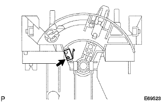

|
Remove two Hita control knobs.
Air conditioner control ASSY removal |
| 1. Control knob SUB-ASSY removes |
|
Remove two Hita control knobs.
| 2. Instrument cluster finish panel SUB-ASSY LWR CTR |
 |
Put a protective tape on the instrumental panel LWR.
Take off two screws.
The instrument cluster finish panel Assemo LWR CTR is used to remove the six claws using a clip remover.
Cut each connector and remove the instrument cluster finish panel ASSY LWR CTR.
| 3. Air conditioner control ASSY is removed |
 |
Remove the three places of claws and disconnect the air conditioner control ASSY.
Air Mix Dan Papon Round Cable Cut off
Spread the clamp part of the clamp part of the air mix dan parcontrol cable to the left and right, pull out the outa cable from the cable clamp part and disconnect the inner cable.
Defrosta dan passon troll cable cut off
 |
Spread the clamp of the clamp part of the defrostan passorot cable to the left and right, pull out the outa cable from the cable clamp part and disconnect the inner cable.
Air Inlet Dan Puptrol Cable Cut (excluding cold region specification car)
 |
Spread the clamp of the clamp portion of the air -in leette dampon control cable to the left and right, pull out the outa cable from the cable clamp and separate the inner cable.
Remove the air conditioning yona control ASSY.
| 4. Remove the heater switch (cold district specification car) |
|  |
Remove the screw and remove the heater switch.
| 5. Remove the airinlet damp control lever |
 |
Remove the claws and remove the airinlet damp control lever.
| 6. Remove the cooler control lever |
 |
Remove the claws and remove the cool control lever.